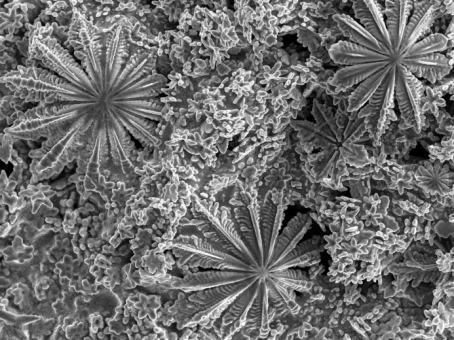

#Equal contribution, *Corresponding author
-
Liquid metal actuated ejector vacuum system
J. Tang, Y. Zhou*, J. Liu, J. Wang, W. Zhu
Appl. Phys. Lett. 2015, 106, 031901[doi]
liquid metals, fluids & flows
-
A volatile fluid assisted thermo-pneumatic liquid metal energy harvester
J. Tang*, J. Wang, J. Liu, Y. Zhou*
Appl. Phys. Lett. 2016, 108, 023903[doi]
liquid metals, fluids & flows
-
Influence of driving fluid properties on the performance of liquid-driving ejector
J. Tang, Z. Zhang, L. Li, J. Wang, J. Liu, Y. Zhou*
Int. J. Heat Mass Transfer 2016, 101, 20–26[doi]
liquid metals, fluids & flows
-
Surfing liquid metal droplet on the same metal bath via electrolyte interface
X. Zhao#, J. Tang#, J. Liu*
Appl. Phys. Lett. 2017, 111, 101603[doi]
-
Liquid metal phagocytosis: Intermetallic wetting induced particle internalization
J. Tang, X. Zhao, J. Li, Y. Zhou, J. Liu*
Adv. Sci. 2017, 4, 1700024[Front Cover][doi]
liquid metals, intermetallic wetting/reaction, surface tension
-
Gallium-based liquid metal amalgams: Transitional-state metallic mixtures (TransM2ixes) with enhanced and tunable electrical, thermal, and mechanical properties
J. Tang*, X. Zhao, J. Li, R. Guo, Y. Zhou, J. Liu*
ACS Appl. Mater. Interfaces 2017, 9, 35977–35987[doi]
liquid metals, liquid metal amalgams, intermetallic wetting/reaction, composites
-
Triggering and tracing electro-hydrodynamic liquid-metal surface convection with a particle raft
J. Tang*, X. Zhao, Y. Zhou, J. Liu*
Adv. Mater. Interfaces 2017, 4, 1700939[Back Cover][doi]
liquid metals, surface tension, electrochemistry, fluids & flows, capillary flows
-
Thin, porous, and conductive networks of metal nanoparticles through electrochemical welding on a liquid metal template
J. Tang*, X. Zhao, J. Li, J. Liu*
Adv. Mater. Interfaces 2018, 5, 1800406[Front Cover][doi]
liquid metals, intermetallic wetting/reaction, surface tension
-
Electrically switchable surface waves and bouncing droplets excited on a liquid metal bath
X. Zhao#, J. Tang#, J. Liu*
Phys. Rev. Fluids 2018, 3, 124804[doi]
liquid metals, droplets, surface tension, surface waves, fluids & flows, capillary flows
-
Advantages of eutectic alloys for creating catalysts in the realm of nanotechnology-enabled metallurgy
J. Tang, R. Daiyan, M. B. Ghasemian, S. A. Idrus-Saidi, A. Zavabeti, T. Daeneke, J. Yang, P. Koshy, S. Cheong, R. D. Tilley, R. B. Kaner, R. Amal, K. Kalantar-Zadeh*
Nat. Commun. 2019, 10, 4645[doi]
liquid metals, nanoalloys, catalysis
-
Unique surface patterns emerging during solidification of liquid metal alloys
J. Tang*, S. Lambie, N. Meftahi, A. J. Christofferson, J. Yang, M. B. Ghasemian, J. Han, F.-M. Allioux, M. A. Rahim, M. Mayyas, T. Daeneke, C. F. McConville, K. G. Steenbergen, R. B. Kaner, S. P. Russo, N. Gaston*, K. Kalantar-Zadeh*
Nat. Nanotechnol. 2021, 16, 431–439[doi]
liquid metals, dilute alloys, phase transformation, pattern formation, crystal growth, surface-critical phenomena
-
Low melting temperature liquid metals and their impacts on physical chemistry
K. Kalantar-Zadeh*, M. A. Rahim, J. Tang*
Acc. Mater. Res. 2021, 2, 577–580[ACS Editors][doi]
liquid metals, perspective
-

Liquid metal synthesis solvents for metallic crystals
S. A. Idrus-Saidi#, J. Tang#*, S. Lambie, J. Han, M. Mayyas, M. B. Ghasemian, F.-M. Allioux, S. Cai, P. Koshy, P. Mostaghimi, K. G. Steenbergen, A. S. Barnard, T. Daeneke*, N. Gaston*, K. Kalantar-Zadeh*
Science 2022, 378, 1118–1124[doi]
liquid metals, phase transformation, crystal growth, capillary flows
-
Intermetallic wetting enabled high resolution liquid metal patterning for 3D and flexible electronics
L. Johnston, J. Yang, J. Han, K. Kalantar-Zadeh*, J. Tang*
J. Mater. Chem. C 2022, 10, 921–931[Most Popular Articles][doi]
liquid metals, noble metals, thin films, alloying, dealloying, crystal growth, intermetallic wetting/reaction, electronics, sensing
-
Oscillatory bifurcation patterns initiated by seeded surface solidification of liquid metals
J. Tang, S. Lambie, N. Meftahi, A. J. Christofferson, J. Yang, J. Han, M. A. Rahim, M. Mayyas, M. B. Ghasemian, F.-M. Allioux, Z. Cao, T. Daeneke, C. F. McConville, K. G. Steenbergen, R. B. Kaner, S. P. Russo*, N. Gaston*, K. Kalantar-Zadeh*
Nat. Synth. 2022, 1, 158–169[doi]
liquid metals, dilute alloys, phase transformation, pattern formation, crystal growth, surface-critical phenomena
-
Liquid-metal solvents for designing hierarchical nanoporous metals at low temperatures
Y. Chi, P. V. Kumar, J. Zheng, C. Kong, R. Yu, L. Johnston, M. B. Ghasemian, M. A. Rahim, T. Kumeria, D. Chu, X. Lu, G. Mao*, K. Kalantar-Zadeh*, J. Tang*
ACS Nano 2023, 17, 17070–17081[doi]
liquid metals, noble metals, nanoporous structures, alloying, dealloying, crystal growth, intermetallic wetting/reaction
-
Liquid metal-enabled tunable synthesis of nanoporous polycrystalline copper for selective CO2-to-formate electrochemical conversion
W. Zhong#, Y. Chi#*, R. Yu, C. Kong, S. Zhou, C. Han, J. Vongsvivut, G. Mao, K. Kalantar-Zadeh, R. Amal, J. Tang*, X. Lu*
Small 2024, 20, 2403939[doi]
liquid metals, alloying, dealloying, nanoporous structures, crystal growth, intermetallic wetting/reaction, catalysis
-
Dynamic electric discharge paths in liquid metal marble arrays
R. Yu, Y. Chi, J. Zheng, R. Fuchs, P. Lv, N.-A. Nor-Azman, L. Johnston, Y. Mao, S. Gao, J. Tang, M. A. Rahim, S. Peng, R. Kaner, G. Mao*, K. Kalantar-Zadeh*, J. Tang*
Adv. Mater. 2024, 36, 2408933[doi]
liquid metals, droplets, marbles, electric discharge, visualization
-
Multi-stimulus perception and visualization by an intelligent liquid metal-elastomer architecture
H. Wang#*, B. Yuan#, X. Zhu, X. Shan, S. Chen, W. Ding, Y. Cao, K. Dong, X. Zhang, R. Guo, Y. Yao, B. Wang, J. Tang*, J. Liu*
Sci. Adv. 2024, 10, eadp5215[doi]
liquid metals, droplets, phase transformation, composites, visualization, sensing
-
Stroking through electrolyte: Liquid metal droplet propulsion through pulse time modulation
R. Fuchs, S. Abdoli, M. Kilani, N.-A. Nor-Azman, R. Yu, S.-Y. Tang, M. D. Dickey, G. Mao*, K. Kalantar-Zadeh*, J. Tang*
Adv. Funct. Mater. 2024, 34, 2314815[doi]
liquid metals, droplets, surface tension, surface oxidation, electrochemistry, fluids & flows, capillary flows
-
Liquid-metal-driven synthesis of mesoporous noble metal thin films and micropatterns for biosensing
L. Johnston, M. Baharfar, Y. Chi, L. Bardet, M. Mousavi, F. Deng, J. Lin, J. Yong, L. Liu, K. Kalantar-Zadeh*, J. Tang*
ACS Nano 2025, 19, 8727-8738[doi]
liquid metals, noble metals, thin films, alloying, dealloying, nanoporous structures, crystal growth, intermetallic wetting/reaction, biosensing
-
High-entropy liquid metal process for transparent ultrathin p-type gallium oxide
L. Bardet, A. Zavabeti, A. Salih, D. Zhang, M. Kilani, M. B. Ghasemian, A. Tadich, Y. Sun, L. Johnston, D. Wang, J. Seidel, F.-M. Allioux, C. Ton-That, J. Tang*, K. Kalantar-Zadeh*
Adv. Funct. Mater. 2025, 2425108[doi]
liquid metals, 2D metal oxides, doping
-
Self-embedded Schottky junctions in liquid-metal-derived 2D oxides for fast and selective room-temperature H2 sensing
Y. Yang, Y. He*, S. Hu, Z. Li, L. Tan, M. Zhang, J. Xiong, Y. Hu, X. Wang, L. Fei*, Z. Wang*, H. Gu, J. Tang*
Adv. Funct. Mater. 2025, 2500605[doi]
liquid metals, 2D metal oxides, gas sensing
-
Liquid metal transport crystal growth: A liquid phase deposition strategy for on-substrate design of metal crystals
Y. Mao#, Y. Chi#, C. Ruffman, R. Yu, P. V. Kumar, N. Gaston*, J. Tang*
ACS Nano 2025, 19, 20172-20183[doi]
liquid metals, metallic solvent, crystal growth